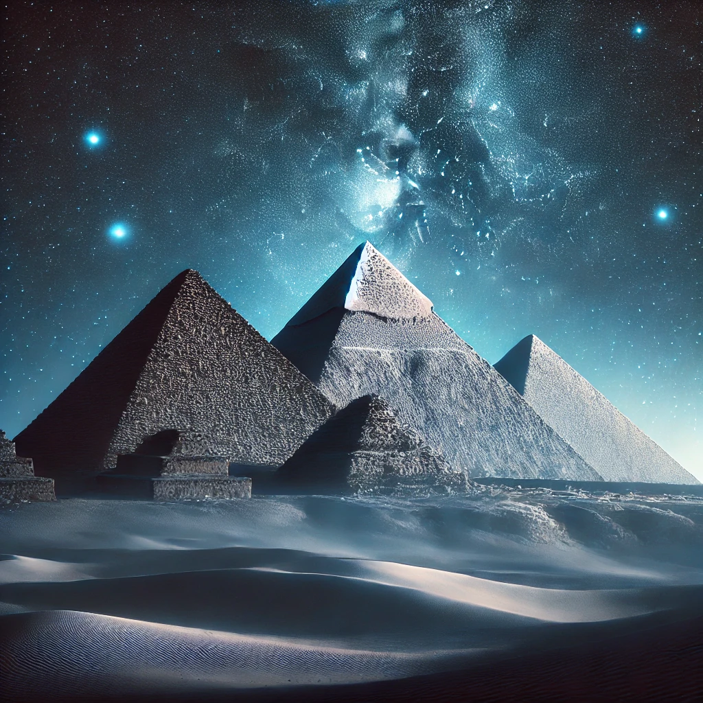
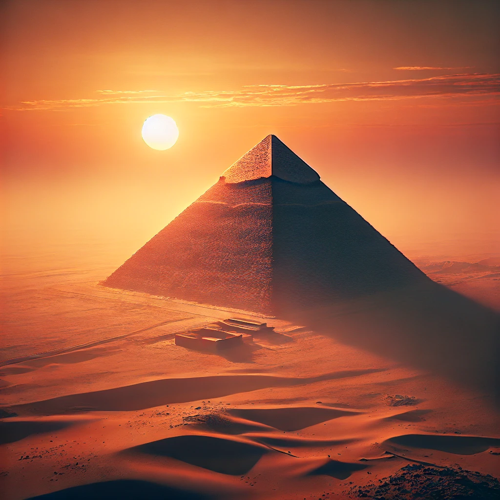
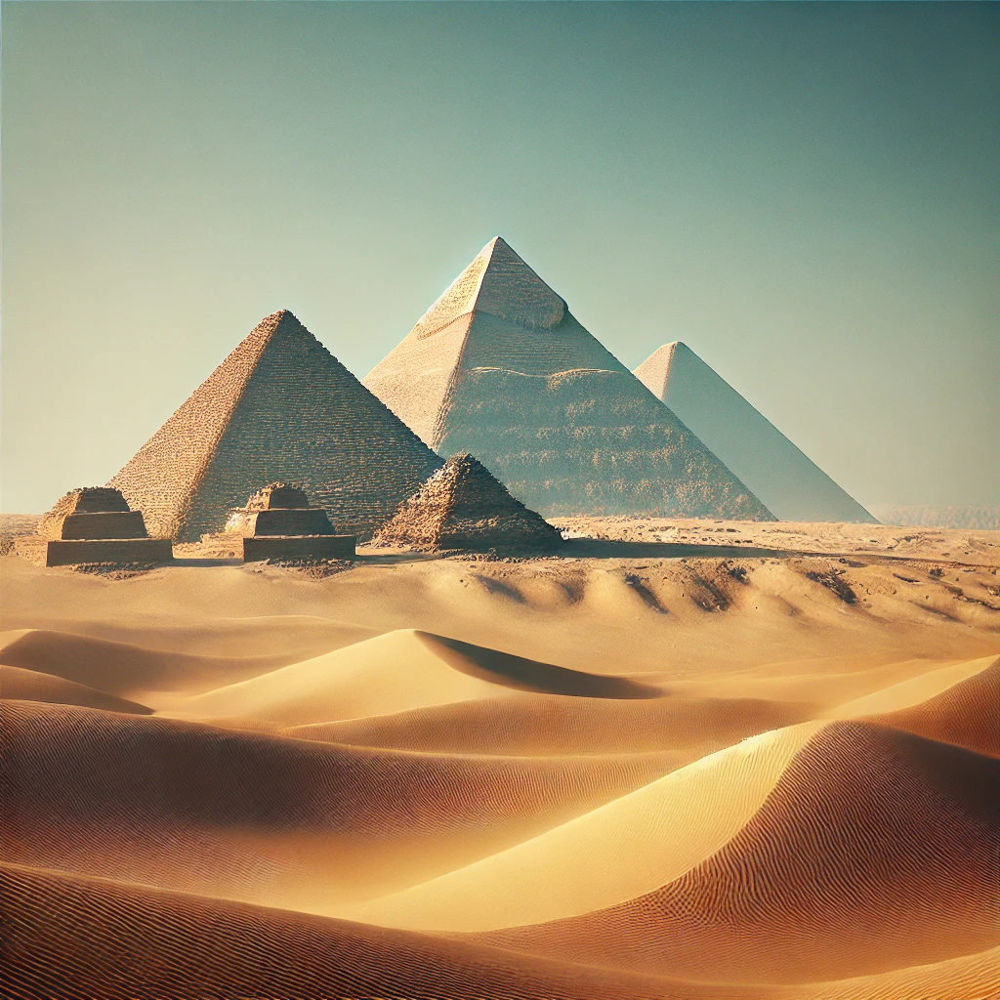

Misztikus Éjszakák

Csillagfényben fürödve a piramisok az éj leple alatt is lenyűgözőek.
Az Égbolt Őrzői

Évezredek óta itt állnak, mintha a csillagok őrzői lennének az éjszakában.
Az Ég és a Föld Találkozása

Az ókori világ csodái: a piramisok évszázadok óta megőrzik titkaikat az ég alatt.
Az Emberi Zsenialitás Nyomdokain

A piramisok precizitása és mérete ma is ámulatba ejti a látogatókat.
A Múlt Monumentumai

A homok és a csillagok között a piramisok örök emléket állítanak a múlt erejének.